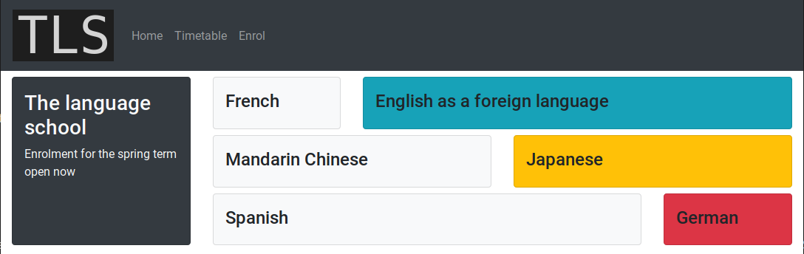

Client-Side Web Development - Building a Bootstrap-Styled HTML Page from Scratch (1)
In this exercise you will be creating a web page from scratch and styling it with the use of Bootstrap 4 classes.
Instructions
- Create an HTML file with the help of Emmet tools
- Open Visual Studio Code.
- Press Ctrl-N to open a new file.
- Press Ctrl-S to save the file (a dialogue will open up to allow you to pick a location and a file name).
- Built into VS Code are Emmet tools for web developers, which you can use to speed up creation of web content. To create a skeleton web page using Emmet, type doc at the top of the empty file. A pop-up menu with the option doc Emmet Abbreviation ⓘ should appear as you type the 'c'. Click on this menu option and the text of a skeleton HTML page will be written into your file.
- Press Ctrl-S to save the file.
- Link in the Bootstrap 4 CSS
- Find the BS4 Get Started page in w3schools
- In the section Bootstrap CDN identify the line that you need to copy into the HTML document header in order to include the Bootstrap CSS.
- Copy the identified line and paste it into your document. Into what part of the HTML document do you paste the line? What type of HTML element is it?
- Create a navbar
- Use w3schools or other reference website to copy a suitable navbar into the body of your html document.
- Change the navbar so that its contents and style match those of the navbar in the picture. The image logo.png is provided with these instructions.
- Lay out the page
- At this stage the body element of your document should only have one child element: the nav element.
- Create a Bootstrap 4 container: a div element assigned to class container-fluid.
- Next, by using Boostrap row, column and card classes create the layout shown in the picture. Remember:
- place only rows immediately inside the container
- place only columns immediately inside rows
- place only rows or cards immediately inside columns
- Add styling details
- Use bootstrap to style padding, margins, font weights, background colours etc. so that the page looks like that in the picture.
